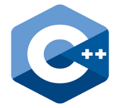
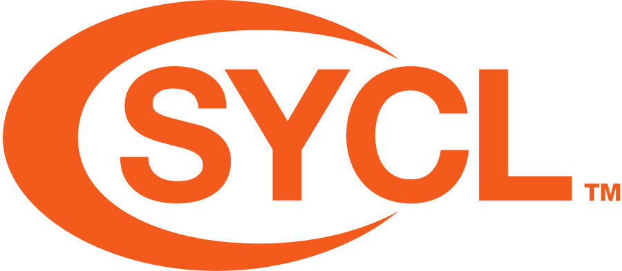
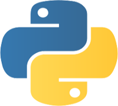
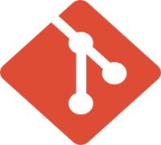
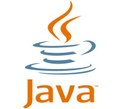
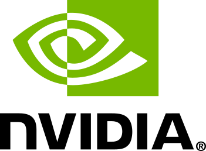

Muhammed Fatih Balin
Senior Applied Scientist at AWS Annapurna Labs 
I work on machine learning accelerators for large language models — systolic arrays, vector execution engines, and quantization algorithms. My background is in high-performance computing, GPU systems, and graph neural networks at scale.
I received my Ph.D. in Computer Science from Georgia Tech in May 2026, advised by Umit V. Catalyurek. I joined AWS Annapurna Labs in October 2024. I co-lead the development of GraphBolt, the multi-GPU dataloading library in DGL, and previously interned at NVIDIA for two summers working on TensorRT-LLM and GNN sampling kernels.
Research Interests






News
- May 2026Defended and received my Ph.D. in Computer Science at Georgia Tech.
- Oct 2024Joined AWS Annapurna Labs as a Senior Applied Scientist.
- Winter 2024Officially designated a "Committor" on the Deep Graph Library for ongoing contributions. Building the multi-GPU GraphBolt dataloading library with the AWS Shanghai AI lab.
- Fall 2023SIRD (mathematical symbolic integration dataset) accepted at the NeurIPS MATH-AI Workshop.
- Fall 2023LABOR — Layer-Neighbor Sampling for GNNs — accepted at NeurIPS.
- Summer 2023Returned to NVIDIA as a DevTech AI intern, working on FP8 quantization in TensorRT-LLM.
- Spring 2023LABOR Sampling shipped as part of the DGL framework.
- Summer 2022Joined NVIDIA as a DevTech AI intern.
Experience
-
AWS Annapurna Labs
Oct 2024 – Present
Senior Applied Scientist
Working on chip design and quantization for ML accelerators.
-
Deep Graph Library 2022 – Present
Individual Contributor
Leading the design and implementation of GraphBolt, the multi-GPU GNN dataloading library. Contributed new GNN algorithms and various optimizations to DGL.
-
 Georgia Institute of Technology
2019 – 2024
Georgia Institute of Technology
2019 – 2024
Graduate Research Assistant
Fast and parallel training methods for graph neural networks. Subgradient optimization for rectilinear partitioning of sparse matrices and point datasets. Shared-memory and MPI-hybrid graph generation conditioned on k-core structure.
-

NVIDIA May 2023 – Aug 2023Developer Technology AI Intern
Implemented fused fine-grained FP8 quantization kernels in TensorRT-LLM for Hopper GPUs — almost as fast as static quantization with no calibration step, enabling on-the-fly quantization for any LLM.
-
NVIDIA May 2022 – Aug 2022
Developer Technology AI Intern
GPU implementations of LABOR (a GNN sampler) and cooperative minibatching methods.
-
Pacific Northwest National Laboratory May 2021 – Aug 2021
Research Intern
Distributed data structures and algorithms on the SHAD distributed programming framework.
-
Icron Technologies Jul 2017 – Aug 2017
Research Engineering Intern
Applications of optimization techniques such as mixed integer programming, and a visual programming language used internally at Icron.
-
Baykar Technologies 2015 – 2016 (two summers)
Software Engineering Intern
Built a suffix-array-based search library for a UAV monitoring GUI; line-of-sight algorithms for unmanned vehicle planning; profiled and rewrote post-flight data processing for a 50× speedup.
Education
-
Georgia Institute of Technology
2019 – 2026
Ph.D. in Computer Science · Diploma
High-performance computing and machine learning, advised by Umit V. Catalyurek.
-
Georgia Institute of Technology
Dec 2022
M.S. in Computer Science
Earned en route to the Ph.D.
-
Boğaziçi University 2015 – 2019
B.Sc. in Computer Engineering and Mathematics (Double Major)
Ranked 1st in department, 3rd in faculty among 400 engineering students.
-
Columbia University Spring 2018
Non-degree Exchange Student in Computer Science
4.07 GPA in graduate-level machine learning and CS courses.
Publications
- A Scalable and Effective Alternative to Graph Transformers
- Cooperative Minibatching in Graph Neural Networks
- Do We Really Need Complicated Graph Learning Models? — A Simple but Effective Baseline
- SIRD: Symbolic Integration Rules Dataset
- Layer-Neighbor Sampling — Defusing Neighborhood Explosion in GNNs
- SGORP: A Subgradient-based Method for d-Dimensional Rectilinear Partitioning
- MG-GCN: Scalable Multi-GPU GCN Training Framework
- On Symmetric Rectilinear Matrix Partitioning
- A Scalable Graph Generation Algorithm to Sample over a Given Shell Distribution
- Concrete Autoencoders for Differentiable Feature Selection and Reconstruction
Talks
Projects
-
GraphBolt
A Graph Neural Network dataloading library with full support for multi-GPU systems.
-
LABOR
Layer-Neighbor Sampling — a drop-in replacement for Neighbor Sampling that can be up to 7× more efficient.
-
MG-GCN
Scalable multi-GPU GCN training framework — full-batch training on billion-scale graphs on a single multi-GPU machine like DGX-1.
-
SARMA
A header-only C++ library for spatial rectilinear matrix partitioning, including novel symmetric algorithms.